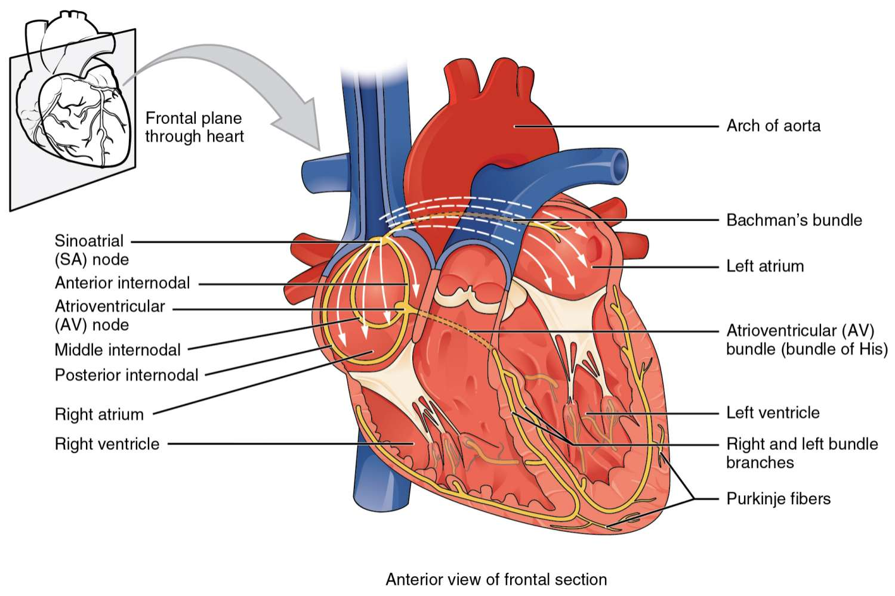
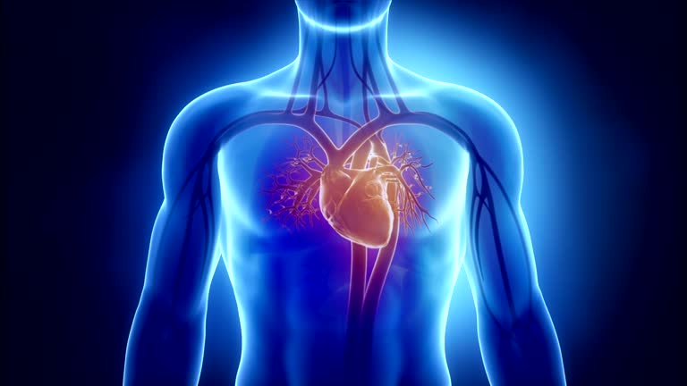

The Sinoatrial (SA) Node is known as the heart’s natural pacemaker. It generates the electrical impulses that start each heartbeat. This node sets the rhythm and pace of the heartbeat.
The SA Node is located in the upper part of the right atrium, near the opening of the superior vena cava (the large vein that brings blood from the body to the heart).

The SA Node initiates an electrical signal that causes the atria to contract and push blood into the ventricles.
It determines the heart rate by sending signals at a regular pace, usually between 60 to 100 times per minute in a healthy person.
After the signal spreads through the atria, it reaches the AV node to continue the process of coordinated heartbeats.
The SA Node is like the main controller of the heartbeat. If it doesn't work properly, the heart may beat too fast, too slow, or irregularly. This condition is called arrhythmia and may need medical help.
The SA Node is very important for a healthy heartbeat. It makes sure the heart works in a smooth, steady, and rhythmic way — just like a drumbeat that keeps everything in sync.